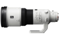

首次采用了索尼全新开发的纳米抗反射涂层(Nano AR Coating)。具有10组11片镜头结构。
画质什么肯定是最好的540。索尼第一炮！价格也是出奇的贵！
画质无敌 对焦超快 体积巨大 用料十足 操作感觉好
非常贵 适马500 4.5 才25000左右啊！
这镜头没啥说的，价格说明了一切。￥80,000人刀。基本比别家的 640还要昂贵。 我是上个月拿到货的，加物流，总共花了折合人民币：￥81,500左右。总体上这镜头工业设计和做工一流，比偶以前用过的Nikon 200-400 f4 VR 和 200/f2 VR 更具有冷冰冰的金属质感。白色镜筒更接近“铝镁合金一体成形”，除了宽大的对焦环之外，镜筒上没有 N、C 炮再多余的胶皮，看着更协调和更具有金属冲击力。 白色更接近“纯白”，比Canon略带“微黄”的白色更亮骚！
锐度超棒，开始A900接上后跑焦，要微调到+10才基本可以。后来问同事又拿了台A77后，对焦马上干净利落了，F4 在肉眼观察，和所谓的最佳光圈F8时的成像，几乎看不出多少差别。 色彩保持G头一贯的特性，浓重中透出极其油润的质感，像油画般厚重、扎实（相比Nikon的清新淡雅，显然这枚G炮更符合偶的口味）。 这镜头虽然500mm，但SSM的速度竟然比 328G 要快，328G已经不慢了（反正偶用下来比 70-200mm f/2.8 G SSM要快），没想到 540G SSM 更块，更迅速，从远端拉回近端，对焦速度嗖嗖的。这镜头基本没有紫边，最大光圈，高反差拍淡色物品，边缘看不到任何紫边。 对焦环极其宽大，非常顺手。 在各家 540中，算相对轻的，配合SONY的机身防抖，基本可以手持拍摄（成功率相对高）。 再赞一下工业设计，这镜头的外形与质感造工一级棒，偶认为是各家大炮中，工业设计与造工最好的之一。
要说缺点，就是价格！ 差不多 8万人民币， 比 N、C家的 600mm/f4 还要贵出一点。 这价格的确太太辣手！